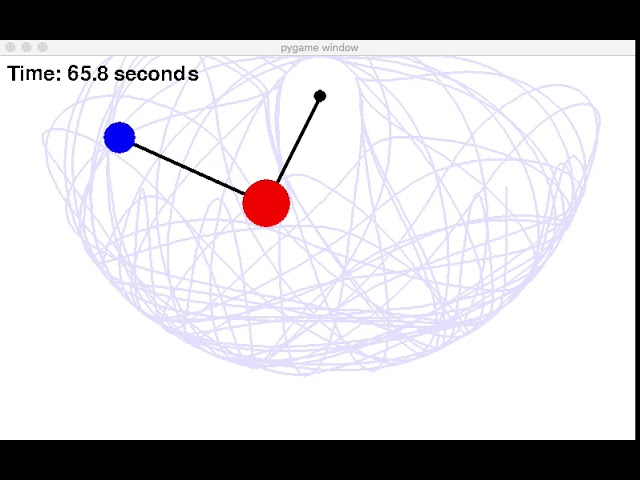
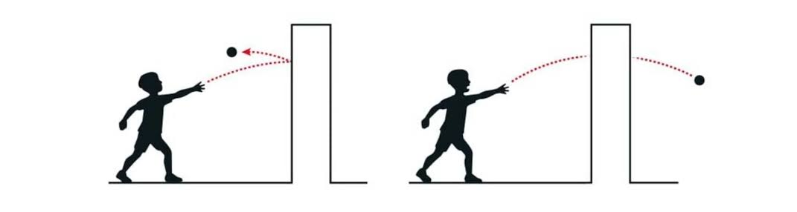
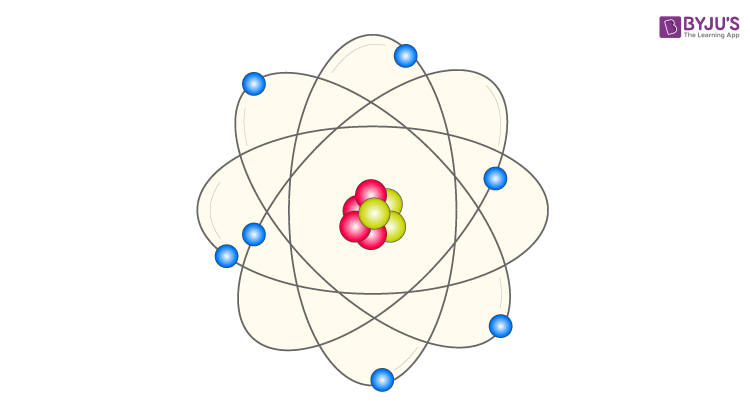

Python Portfolio
Welcome to the most interesting part of my portfolio. I recently rewatched so I went down the rabbit hole of revisiting some of my undergraduate Physics topics. I also got sidelined and looked briefly into a bit of computer vision shenanigans. Don't hesitate to ask me about any of the below, I'm contactable at My LinkedIn, or my email sheehanconor67@gmail.com
See the below button for my resumé, or if you've time to spare, my MSc on Machine Learning applied to Manufacturing Data.

The double pendulum is usually where undergraduates encounter chaos (mathematically) first. Here I present a Streamlit simulation, as well as mathematical derivations using both Newtonian and Lagrangian mechanics.

This simulation shows a 1D Gaussian Wavepacket smacking into a Potential Barrier. If you make the wall sufficiently thin, and the wave big and strong, Quantum tunneling is observed. Much more interesting, once you know the connection to semiconductor limitations in electronics.

This one was really just about gettings the basics of Quantum Mechanics fresh again in my head. An energy level here, wavefunction there, and some nice graphs to go along with it.
This one came along after some time working in the area of Computer Vision. Just a personal interest, in how computers can detect objects in tensors, which are essentially just grids of numbers.

This is a work in progress. This uses tensorflow, on Google Collab to use their free GPUs. However I keep hitting usage limits, so I had to slow down. This project also just detects if an image of dinner is a burger or a pizza.